I thought the day’s shooting was over, but a suggestion from a fellow photographer led us to another village, where we caught the return of the General procession. With only a few minutes before our departure, I continued through the village lanes, photographing the people who were still offering incense, talking, and simply going about their lives beyond the ceremony.
When the people managing the General Hall began putting the doors back in place, I thought the day’s shooting was over. It wasn’t.
A fellow photographer told me that the villages here were closely connected. We could reach the neighboring village in just a few minutes, and there was a chance we might catch the General procession returning and get another round of photographs.
There wasn’t much time before we had to leave, but I followed without hesitation. With only a few minutes left, I continued walking and photographing through the village lanes.
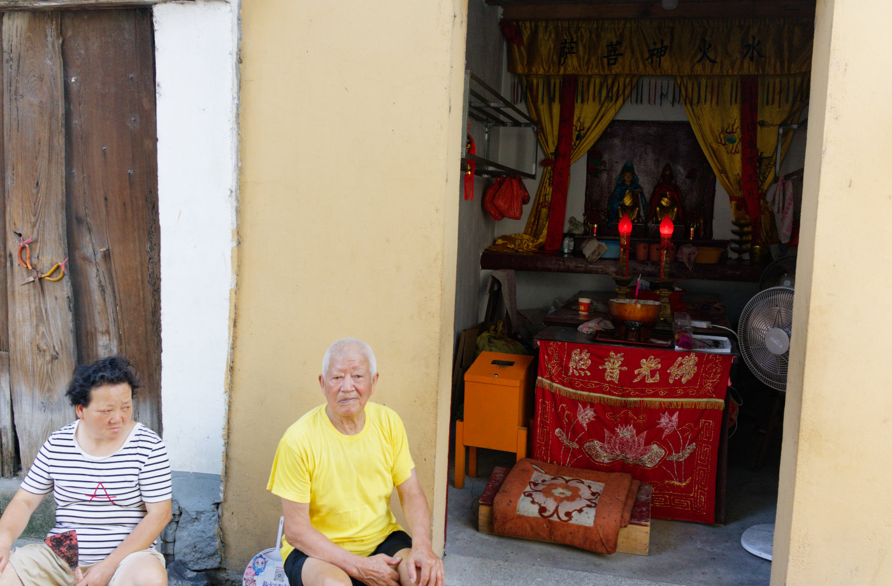
在村巷途中看到一间小庙。A small temple we came across while walking through the village lanes.
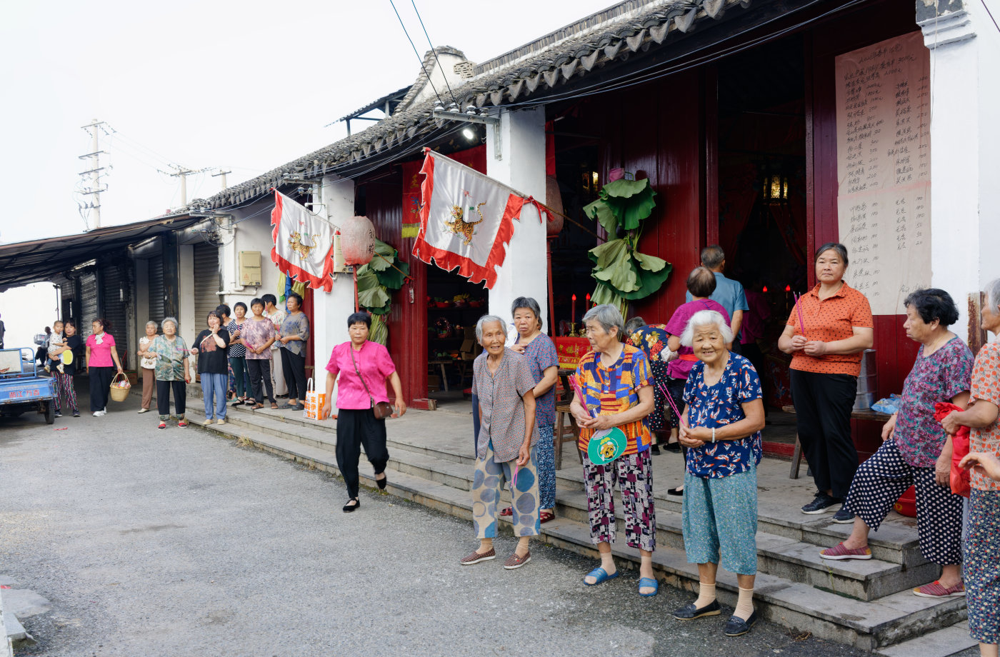
当我们到达隔壁村猛将堂口时，村民正站在门口准备迎接猛将神归位。When we reached the General Hall in the neighboring village, villagers were already waiting at the entrance to welcome the General back.不一会儿，猛将归来，村民点燃鞭炮迎接。Soon, the General returned, and villagers lit firecrackers to welcome him.
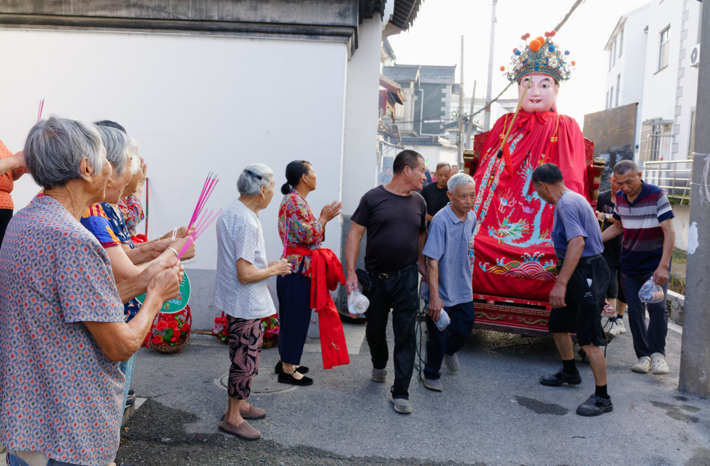
猛将到达堂口时，虔诚的村民持香等候祭拜。As the General arrived at the hall, villagers waited with incense to pay their respects.
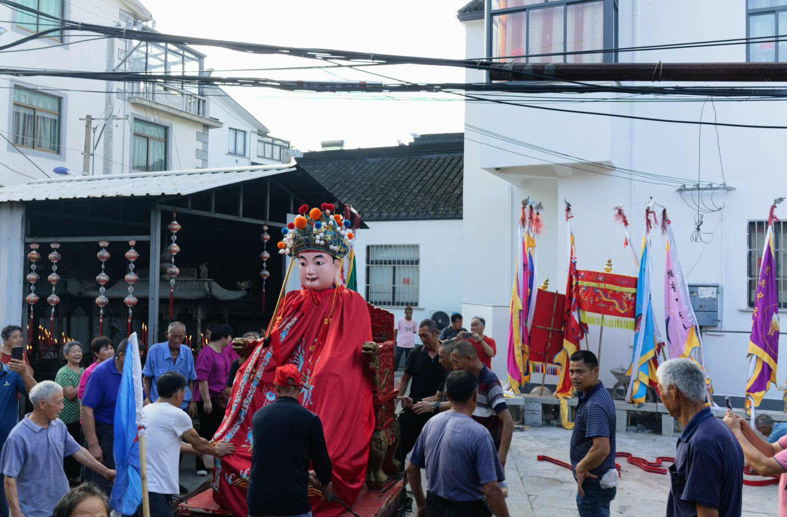
同样，猛将归来后仍要在堂口广场上转几圈。As before, after returning, the General was carried around the square in front of the hall several times.
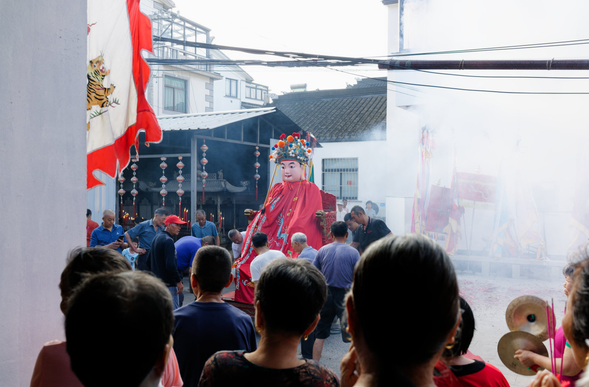
站在堂门口迎接欢庆的村民。Villagers standing at the entrance, welcoming the returning procession.
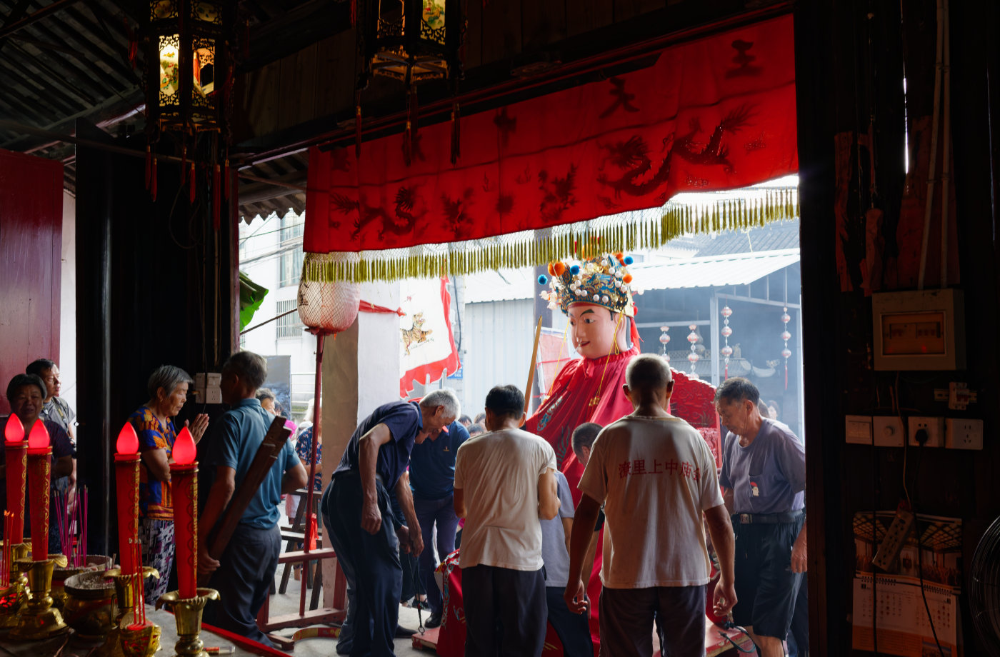
众人将猛将抬进堂内。The villagers carry the General into the hall.
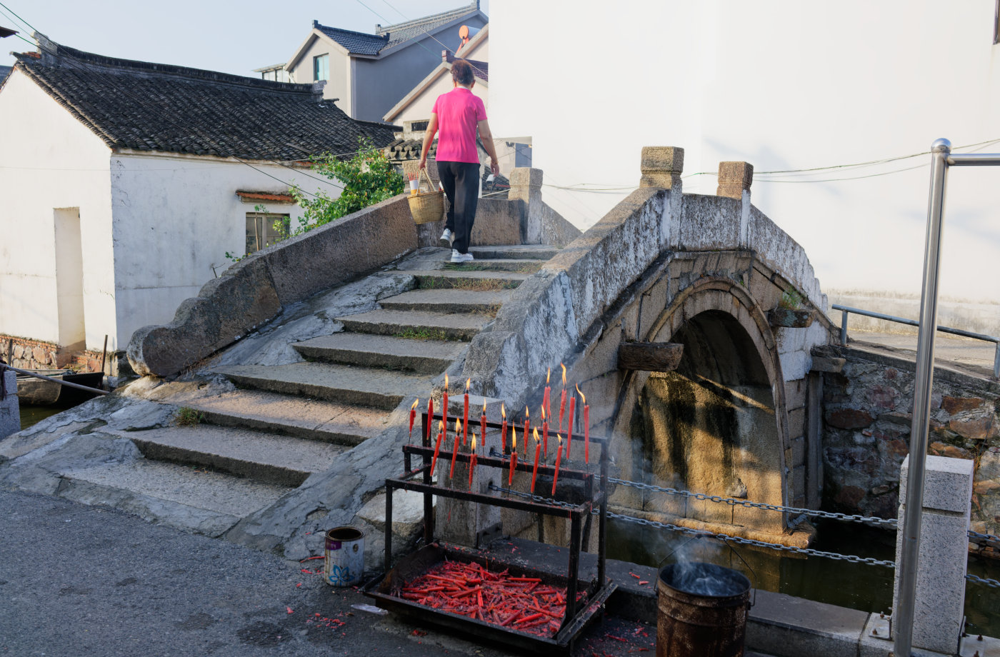
猛将神归位后，祭拜活动还在继续，一般在巷弄路口或桥边会放置烛架供村民祭拜。Even after the General had been returned to the hall, people continued to worship. Candle stands are often placed at lane entrances or beside bridges for villagers to make offerings.
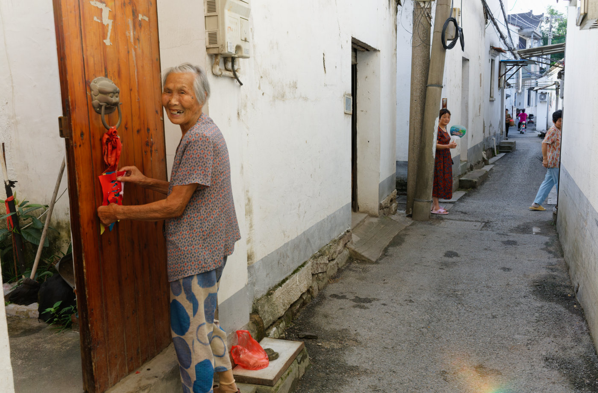
时间不早了，我们在返程途中遇见的村民。It was getting late. Villagers we met on our way back.
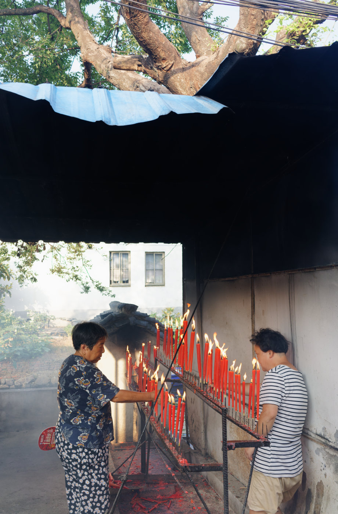
沿途小庙门口仍有村民在陆续上香。Villagers were still arriving to offer incense at the small temples along the way.
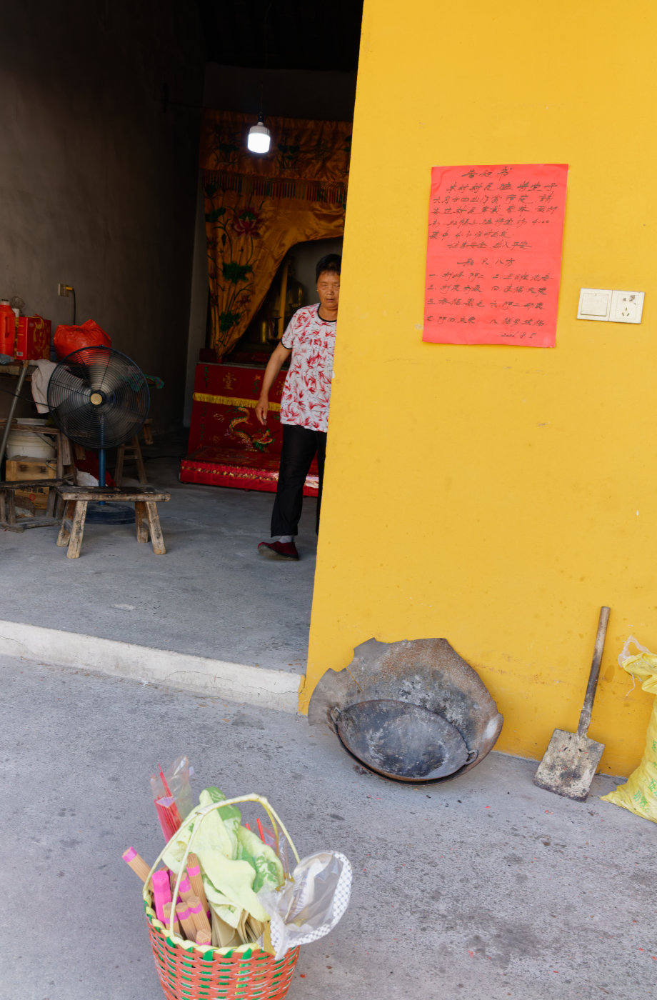
途经庙墙上贴着今日抬猛将活动的红纸告示。地上放着上香的挎篮。A red notice for the day’s General procession was posted on a temple wall. Baskets used for carrying incense offerings were left on the ground.
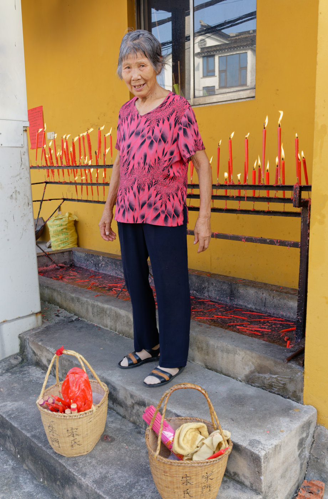
一位老人点完香烛后，微笑着看着镜头。After lighting her incense and candles, an elderly woman smiles at the camera.
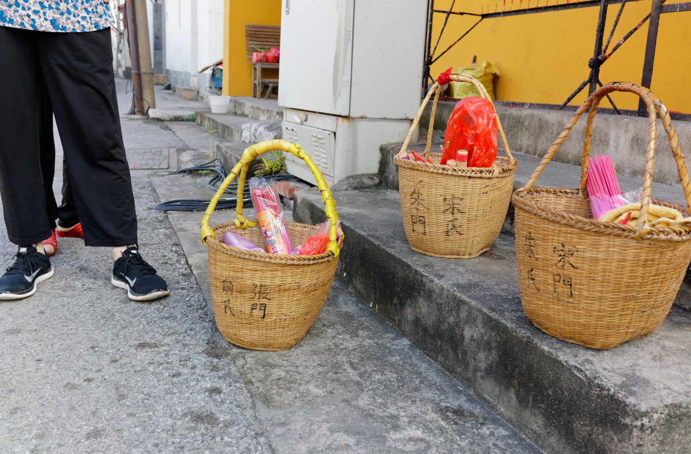
前来上香村民的挎篮，上面写着她们的姓氏。Baskets belonging to villagers who came to offer incense, with their family names written on them.
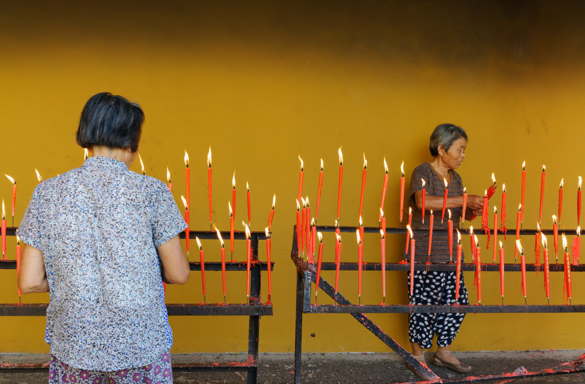
两位老人正在点香烛。Two elderly women lighting incense and candles.
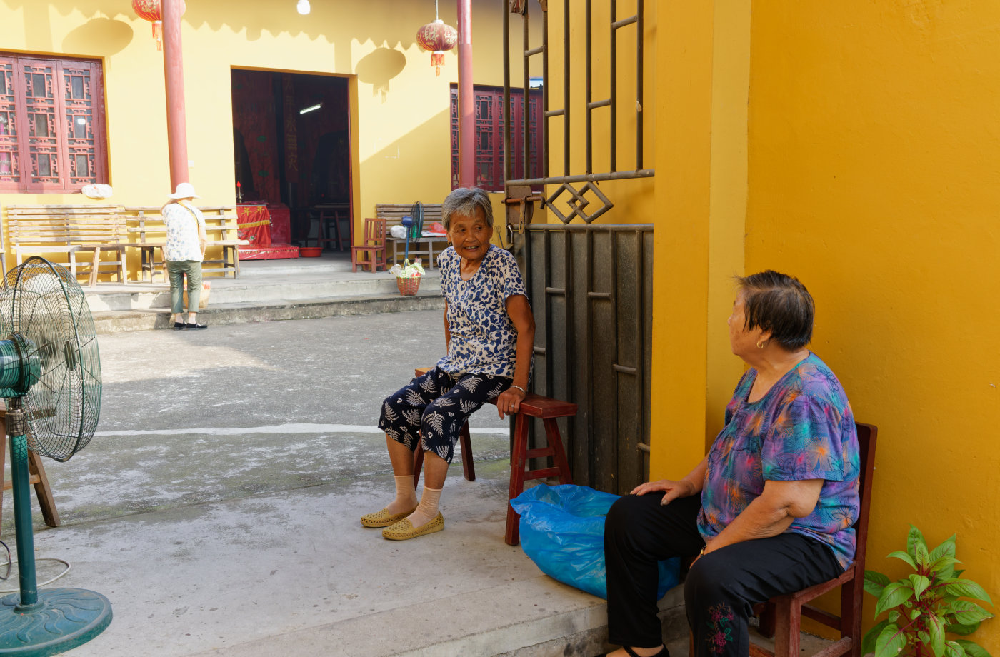
仪式结束后，两位老人在庙门口悠闲地拉着家常。After the ceremony, the two women lingered at the temple entrance, chatting casually.
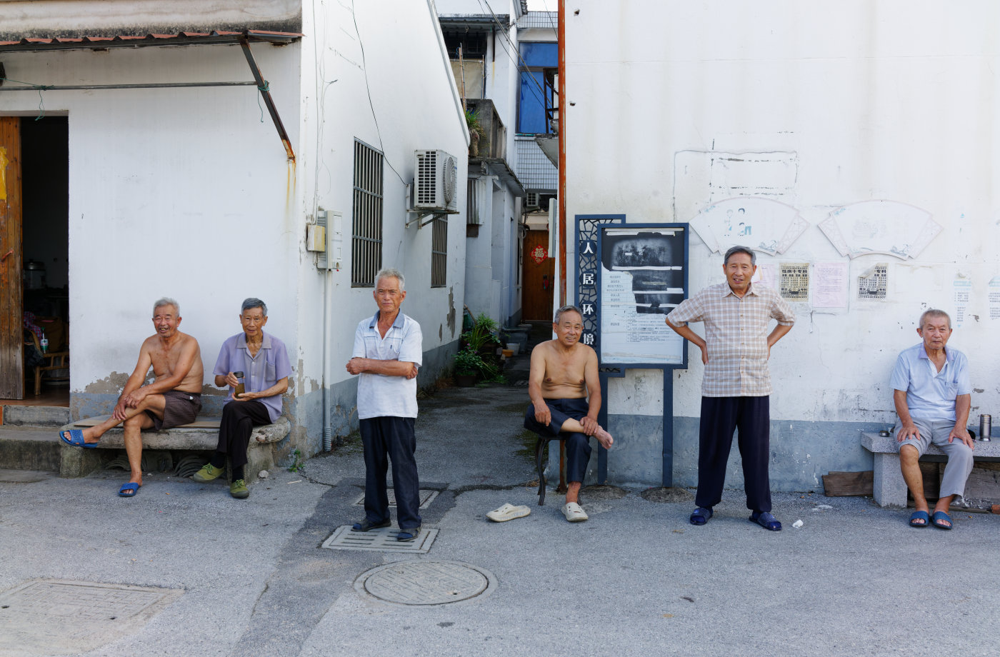
当我们即将离开时，在村口聚着几个男人，我说拍个照吧，他们笑着迎向我的镜头。Just as we were about to leave, a few men were gathered at the village entrance. I asked if I could take a photograph, and they smiled as they turned toward my camera.